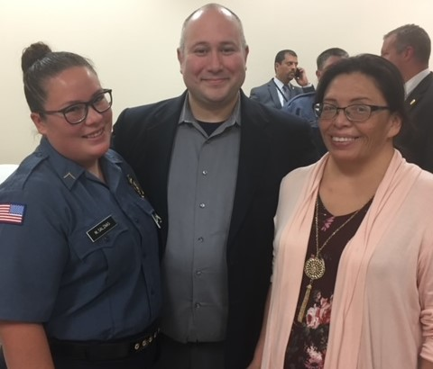
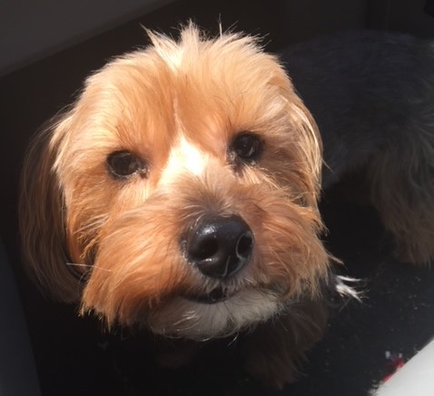

A Little Bit About Me
Hello, my name is Shaun Poweshiek. I'm from Norman, OK and with the exception of eight years in the military I have lived here my whole life! My curret employer is Devon Energy and I love the company and all my coworkers, what an amazing place to work! I'm also a senior at the University of Oklahoma, pursuing a business degree in Management Information Systems.
Family Guy
I am very family oriented and enjoy spending time with my immediate and extended family. My wife and I have are empty-nesters, but we miss our amazing daughter everyday.
My Furry Friends
My wife and I are also avid animal lovers and I simply can't remember how many pets we have had over the years. My wife has worked as a veterinary technician for many years and all too often brought her work home with her! Currently, we have a Yorkie and a German Shepard, and yes they are both a handful! :)
Semper Utile
Having served in the military, I enjoy spending time with fellow veterans and volunteering at the VFW and American Foreign Legion. I also contribute to veteran support causes like the Wounded Warriors Project.